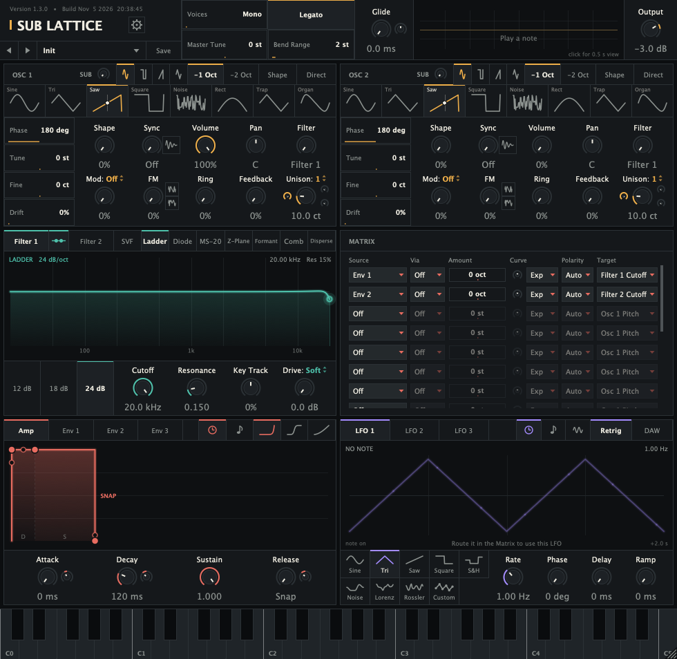
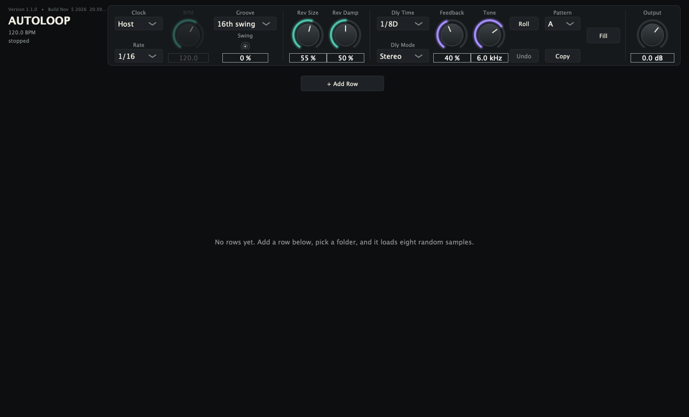
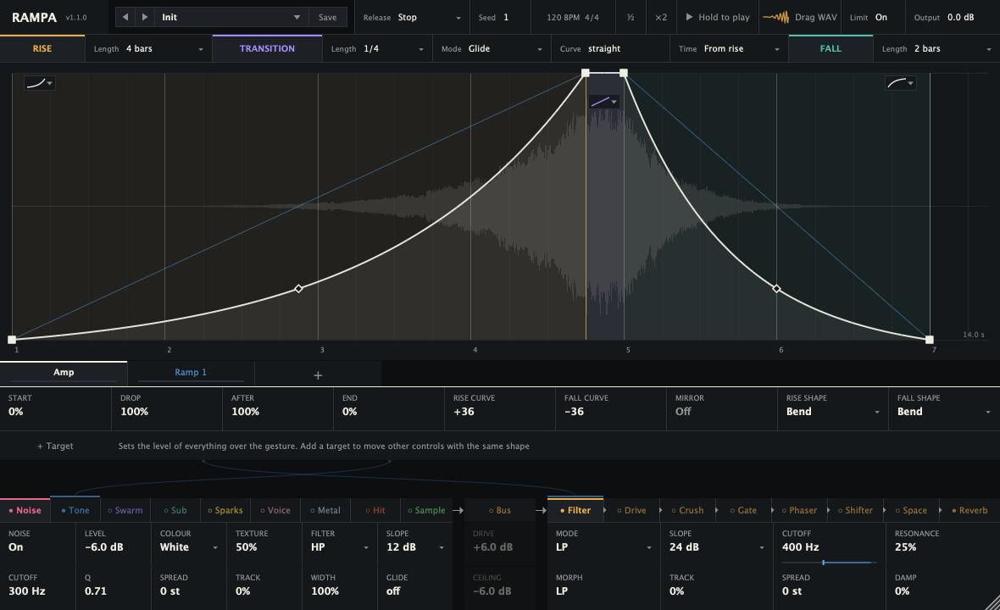
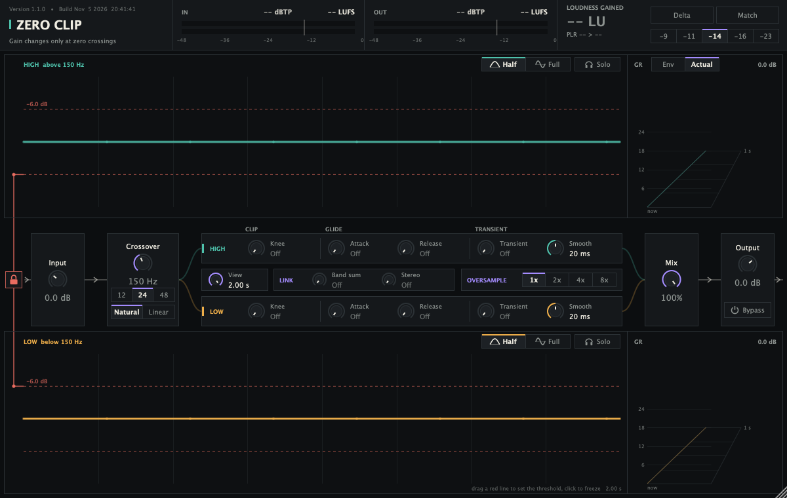

Sub Lattice
A polyphonic subtractive synth with band-limited oscillators, eight filter models and a 16-slot modulation matrix.
Free
Boutique audio software
Instruments and effects, tuned by ear.
Browse the plugins
A polyphonic subtractive synth with band-limited oscillators, eight filter models and a 16-slot modulation matrix.

Each row plays random samples from a folder, and every sound control has a lane for happy accidents that replay every time.

A stereo delay with up to ten modules inside the loop, a limiter that lets the repeats run past unity, and markers for where the return leaves and where you listen.

An alias-free oscillator morphs from a sine into eleven shaped waves under drawn envelopes, with a noise layer for the click. The tail's phase stays put whatever the pitch does, and every time reads as a note value and a pitch.

A mono generator of risers, downlifters, transitions and impacts. A note plays a Rise, a Transition and a Fall locked to the host's tempo; nine sources and a reorderable effects chain make the sound, and any control can follow ramps, LFOs and random modulators. Drag the result out as a WAV.

A two-band clipper whose gain changes only where the waveform crosses zero, so it never cuts an edge into the wave. Each half or whole cycle is measured in a 70 ms lookahead and turned down as one; Transient keeps the attacks, Knee and Glide smooth the gain, and oversampling up to 8x, a linear-phase crossover and loudness and true-peak meters come with it.